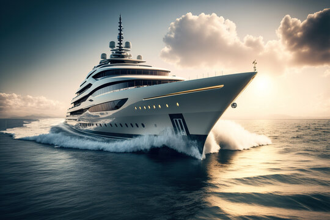

Mediterranean Sailing Routes: Discovering Europe's Most Exclusive Yacht Destinations
The Mediterranean Sea represents humanity's most legendary maritime playground—a crystalline body of water bordered by three continents, rich with millennia of human civilization, and offering extraordinary diversity of landscapes, cultures, and experiences. For luxury yacht enthusiasts, the Mediterranean provides an unparalleled sailing destination combining natural beauty, historical significance, world-class anchorages, and access to some of Europe's most exclusive destinations. Whether navigating the sparkling waters off the French Riviera, exploring hidden Greek islands, or cruising along the rugged Dalmatian coast, Mediterranean yacht journeys transform into unforgettable adventures that transcend ordinary travel experiences.
The French Riviera, or Côte d'Azur, establishes the Mediterranean's most glamorous yachting region. From Cannes to Saint-Tropez, Monaco to Antibes, this legendary coastline showcases sophisticated port facilities, world-renowned restaurants, exclusive beach clubs, and access to luxury shopping and entertainment. Yacht owners glide past iconic locations like the Cannes Film Festival venue, anchor near Saint-Tropez's legendary beaches, and experience Monaco's legendary glamour firsthand. The region's yacht-centric culture means virtually every amenity caters expressly to maritime tourists. Smaller, more intimate destinations like Îles d'Hyères offer peaceful anchorages where yachts can escape crowds while remaining close to larger resort areas.
Mediterranean Sailing Routes

Greece's island-dotted Aegean Sea stands as perhaps the Mediterranean's most enchanting cruising ground. The Cyclades, with their whitewashed villages, golden beaches, and azure waters, create postcard-perfect scenery that seems almost unreal in its beauty. Islands like Santorini, Mykonos, and Paros offer a fascinating blend of ancient history, contemporary culture, and luxurious tourism infrastructure tailored to yacht-borne travelers. The Dodecanese islands further south provide slightly less-crowded alternatives maintaining similar beauty and charm. The Ionian Islands, off Greece's western coast, offer dramatic coastal scenery, sheltered anchorages, and access to charming fishing villages and mountain towns. Expert crystal-clear waters allow yacht passengers to snorkel among ancient ruins submerged offshore and explore underwater archaeological treasures.

Italy's Mediterranean coastline offers perhaps the most diverse yachting experience, combining natural beauty, culinary excellence, cultural richness, and sophisticated port facilities. The Amalfi Coast near Naples presents breathtaking cliffside scenery with charming villages clustering impossibly on vertical terrain. Portofino and the Italian Riviera showcase romantic harbor villages frequented by yachters since the nineteenth century. Sardinia and Corsica offer pristine beaches, granite outcroppings, and protected anchorages in locations that feel wonderfully remote despite close proximity to developed areas. The Aeolian Islands near Sicily provide volcanic drama, including the still-active Stromboli volcano, creating geological spectacles accessible only by sea.

Spain's Costa Brava and Mediterranean coast provide vibrant alternatives combining cultural energy with natural beauty. Barcelona offers cosmopolitan excitement, world-class dining, and sophisticated entertainment. Smaller coastal towns provide more intimate experiences, while the Balearic Islands—Majorca, Menorca, and Ibiza—offer everything from exclusive beach clubs to peaceful coves and outstanding marine biology. Morocco's Mediterranean coast, accessible across the strait from Spain, adds exotic dimension to yacht itineraries, introducing different cultures, cuisines, and architectural traditions.

The Dalmatian Coast of Croatia represents one of the Mediterranean's most dramatic recent discoveries for yacht tourism. For centuries, geopolitical circumstances limited access to this stunning region featuring rugged limestone cliffs, cascading waterfalls, medieval cities, and extraordinary natural beauty. Today, Croatia welcomes yachts enthusiastically, offering outstanding provisioning facilities, expert local guides, and access to some of Europe's most unspoiled natural scenery. Island-hopping through the Dalmatian Islands provides adventures combining history, nature, and relaxation.
.jpg)
Practical considerations make Mediterranean cruising particularly accessible. Excellent weather during summer months (May-October) provides reliable wind patterns and calm seas. Well-developed marine infrastructure—fuel docks, repair facilities, provisioning—exists throughout the region, eliminating logistics challenges that might burden ocean voyages. Numerous charter companies operate Mediterranean fleets, allowing clients without private yachts to experience Mediterranean sailing. Experienced local pilots and guides provide invaluable cultural insights and expert navigation through crowded harbors and complex anchorages.
Mediterranean yacht cruising combines physical beauty, culinary excellence, historical significance, and sophisticated leisure experiences in ways few other destinations can match. Each voyage becomes a personal odyssey through landscapes immortalized in classical literature, paths traced by historical figures, and current-day cultures shaped by millennia of Mediterranean civilization. Whether pursuing adventure, searching for relaxation, or seeking cultural immersion, Mediterranean yacht voyages deliver transformative experiences that resonate throughout travelers' lives, inspiring future maritime adventures and deepening appreciation for the world's maritime heritage.